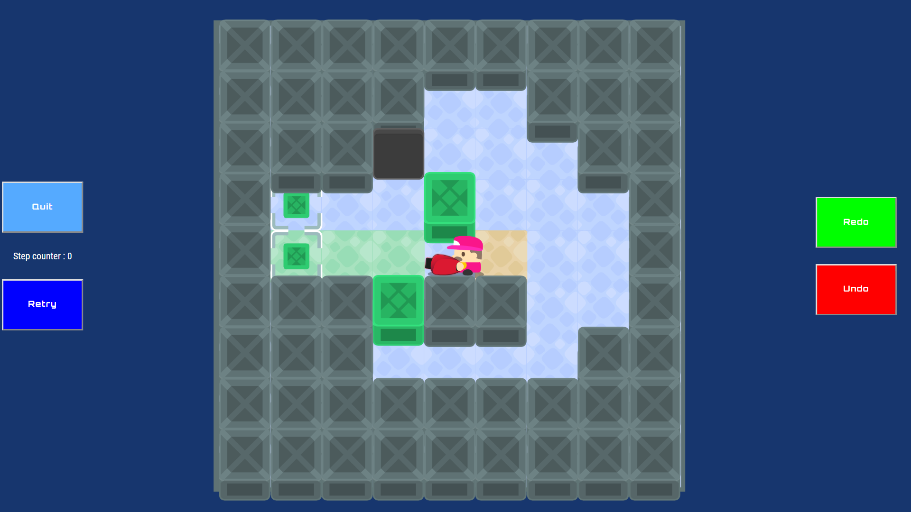
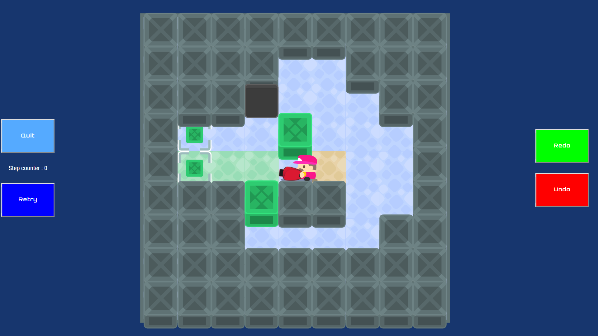
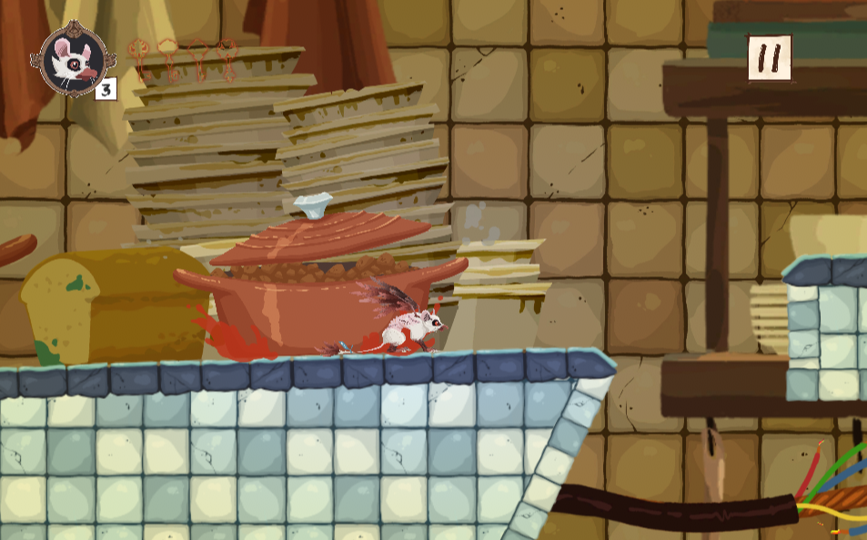
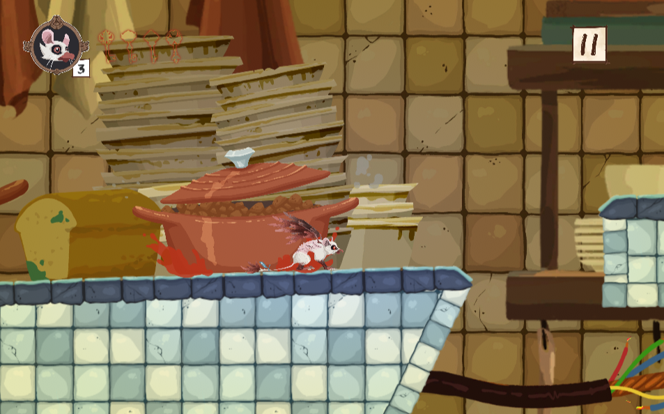
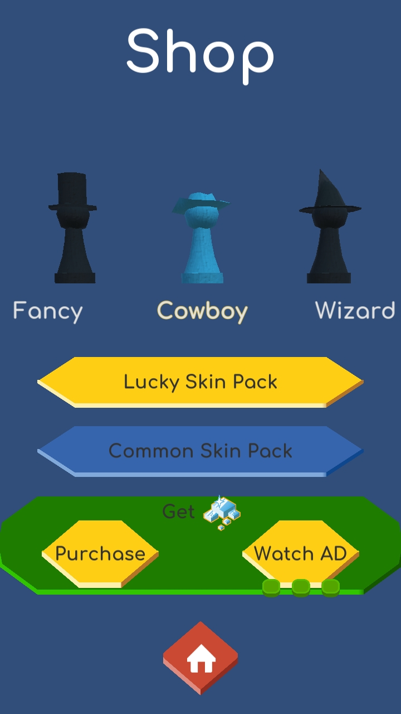
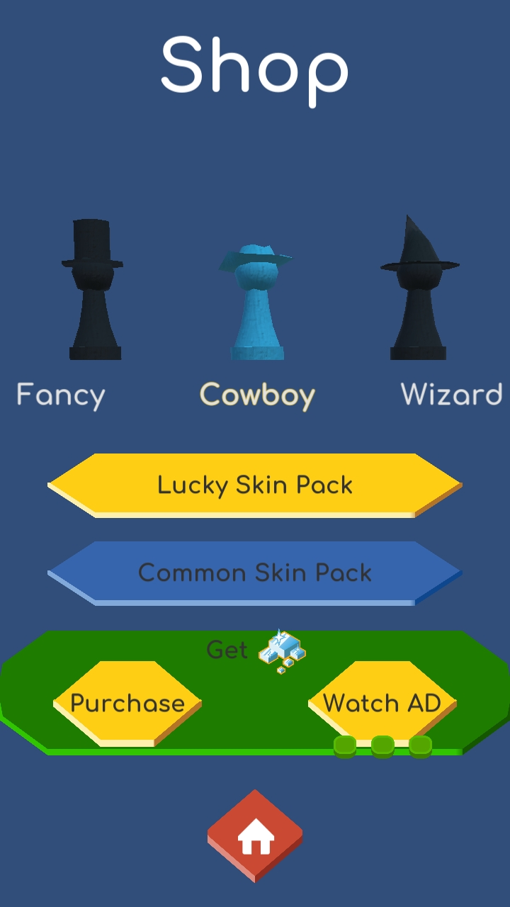

Projet solo : Alexandre Raumel
(Développeur gameplay)
Durée de production : 2 mois
Support : PC
Technologie : Adobe Animate
Langage : Actionscript 3
Bug Jungle est le premier projet étudiant que j'ai réalisé lors de ma formation en Game Design & Programming à Isart Digital.
L’exercice était de créer un Shoot’em up sur PC dans lequel une capacité spéciale devait être créée et nécessaire à la complétion du jeu. Le level design devait être aussi conçu lors de cet exercice.
Dans Bug Jungle vous parcourez un niveau semé d’embûches et d'ennemis au bout duquel vous devrez affrontez un boss en trois phases.
Vous possédez la capacité de changer de couleur (bleu ou rouge) afin de détruire les ennemis de la même couleur que vous.
Pour vous aider, vous pourrez récupérer des bonus permettant d'avoir des tirs plus puissants et plus nombreux

Développeurs gameplay : Loïc Jacob, Alexandre Raumel, Maximilien Sadi Korichene
Durée de production : 2 jours
Support : PC
Technologie : Adobe Animate
Langage : Actionscript 3
Psycho Defender est le projet que j'ai réalisé lors de la Global Game Jam 2019 avec deux camarades de classes afin de nous tester alors que nous apprenions encore les rudiments de l'Actionscript 3.
Le thème de cette édition de la Global Game Jam était "Home".
Des voleurs essaient de vous voler votre fortune, mais ils ne savent pas qui vous êtes : un petit homme psychotique. Avec des pièges vicieux et des armes massives, apprenez-leur le respect que vous méritez. Et... TUEZ-LES TOUS !
Dans Psycho Defender, vous incarnez donc le propriétaire des lieux, et devez activer les pièges au bon moment pour éliminer les voleurs. Ces pièges peuvent être améliorés afin de réduire leur temps de recharge, et ainsi faire plus de dégâts.


Développeurs gameplay / Game Designers : Clément Coquidé, Arthur Raffaud, Alexandre Raumel
Durée de production : 2 mois
Support : Web (PC & Mobile)
Technologie : Web
Langage : ES6
Sokorecoil est le deuxième projet étudiant que j'ai réalisé lors de ma formation en Game Design & Programming à Isart Digital.
L'exercice était de revisiter le sokoban - qui est un jeu de puzzle où l'on pousse des caisses pour les amener sur des cibles - pour en faire une version originale.
Au cours de ce projet qui a été réalisé en ES6 pour le web, chaque étudiant a conçu deux level design originaux.
Dans Sokorecoil, vous devez utilisez un canon sonique afin de déplacer les caisses sur les cibles. Contrairement au sokoban classique, vous ne pouvez pas vous déplacer librement. Pour vous déplacer, vous devez utiliser le recul de votre arme.
C’est-à-dire que lorsque l’on tire, on pousse la caisse mais on est propulsé à l’opposé. Plus l’on tire près de la caisse plus on l’envoie loin et plus on est éjecté en arrière.

 



Projet solo : Alexandre Raumel
(Développeur gameplay, Game Designer, Sound Designer)
Durée de production : 1 semaine
Support : Mobile
Technologie : Adobe Animate
Langage : Actionscript 3
Tales of a Dream est le troisième projet étudiant que j'ai réalisé lors de ma formation en Game Design & Programming à Isart Digital.
L'exercice était de réaliser le jeu Touch Adventure sur mobile en se concentrant sur l'optimisation et la Juiciness du projet. C'est le premier projet exclusivement mobile réalisé.
Pour ce projet, j'ai donc produit les différents patterns des obstacles, ainsi que tous les éléments graphiques et sonores.
Dans Tales of a Dream, vous devez esquiver les obstacles en maintenant votre doigt à l'écran le plus longtemps possible.
Contrairement au jeu original qui met l'accent sur le scoring, j'ai décidé de relayer celui-ci au second plan pour plutôt laisser le joueur apprécier la musique et les effets dans un style japonisant afin de se détendre.


Projet solo : Alexandre Raumel
(Développeur gameplay, Game Designer)
Durée de production : 6 semaines
Support : PC, Mobile
Technologie : Unity 2019.1.8f
Langage : C#
Recycling Time est le quatrième projet étudiant que j'ai réalisé lors de ma formation en Game Design & Programming à Isart Digital.
L'exercice était de reproduire le jeu Rush pour se familiariser avec le moteur Unity ainsi que le C#.
J'ai du reproduire trois niveaux existants mais aussi produire trois niveaux originaux. De plus, nous devions ajouter de la Juiciness afin de rendre notre projet original.
Dans Recycling Time, le but est de placer des tuiles directionnelles ou à effet spécifique afin de diriger les différents conteneurs de déchets vers leur cible correspondante sans les faire tomber dans le vide ou s’entrechoquer.


Développeurs gameplay : Alexandre Raumel, Maximilien Sadi Korichene, Clément Vieilly, Joël Voignier
Sound Designers : Lény Joffard, Josselin Tange
Graphistes : Orson Captain Sass, Laetitia Cheruau, Théo Iparraguirre, Damien Joubert, Jade Maillard, Lynn Williams
Durée de production : 2 mois
Support : Mobile
Technologie : Unity 2019.1.8f
Langage : C#
Chimerat est le cinquième projet étudiant que j'ai réalisé lors de ma formation en Game Design & Programming à Isart Digital.
L'exercice était de produire un jeu de plateforme sur mobile utilsiant comme capacité le wall jump ainsi que la faculté de planer.
Pour se faire, nous étions une équipe de douze personnes : deux développeurs gameplay, six graphistes et deux sound designers.
Dans Chimerat, vous incarnez Poire, le fruit des expériences d'un alchimiste fou obsédé par les oiseaux. Votre objectifs est de vous enfuir du domaine de cet alchimiste afin de retrouver votre liberté. Vous parcourrez donc la maison de l'alchimiste au travers de deux niveaux, le sous-sol et le rez-de-chaussée.
Sur ce projet, j'ai réalisé la capacité de planage du personnage, toutes les caméras, l'intégrations d'UI, la création d'outils pour permettre aux Sound Designers de travailler plus efficacement, l'intégration sonore, une partie des tutoriels, et un peu de juiciness.
 



Développeurs gameplay : Eliaz Lebert, Thomas Pham, Alexandre Raumel, Joël Voignier
Game Designers : Natacha Leonard, Maxence Quedeney, William Rey-Pommier, Charlie Wagner
Durée de production : 2 mois
Support : Mobile
Technologie : Unity 2019.1.8f
Langage : C#
Vertical Dungeon est le sixième projet étudiant que j'ai réalisé lors de ma formation en Game Design & Programming à Isart Digital.
L'exercice était de produire un jeu mobile ayant pour modèle économique le Free To Play. Pour se faire, nous étions une équipe de huit personnes : quatre développeurs gameplay et quatre game designers.
Dans Vertical Dungeon, le but est de résoudre des puzzles dans lesquels vous devez amenez votre personnage sur la zone de fin de niveau tout en récupérant un maximum de pièce et en évitant les pièges et le vide.
Grâce aux diamants que vous pouvez gagner ou acheter, vous pouvez acheter différents skins pour votre personnage.
Sur ce projet, j'ai réalisé toute la partie serveur et sauvegarde des données, le leaderboard, les intéractions pour les currencies, les intégrations graphiques et sonores, les UI du Hud ainsi que les écrans de victoires et de la juiciness.


 
